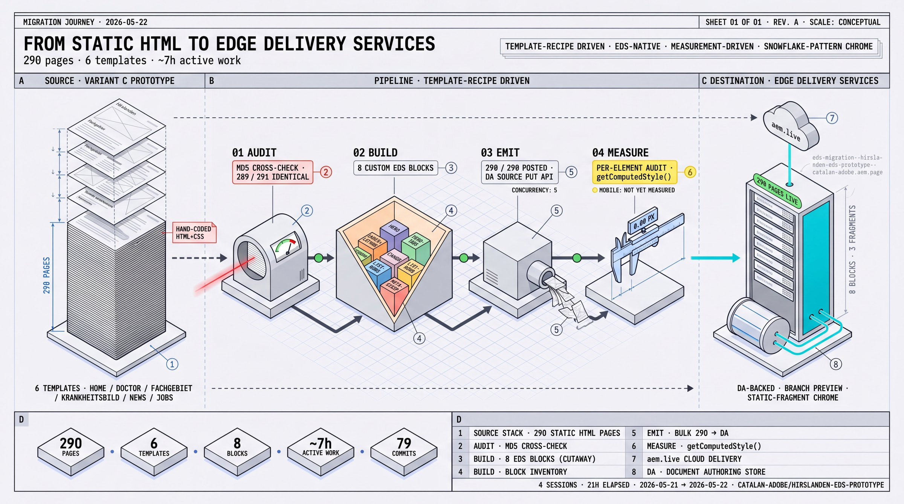
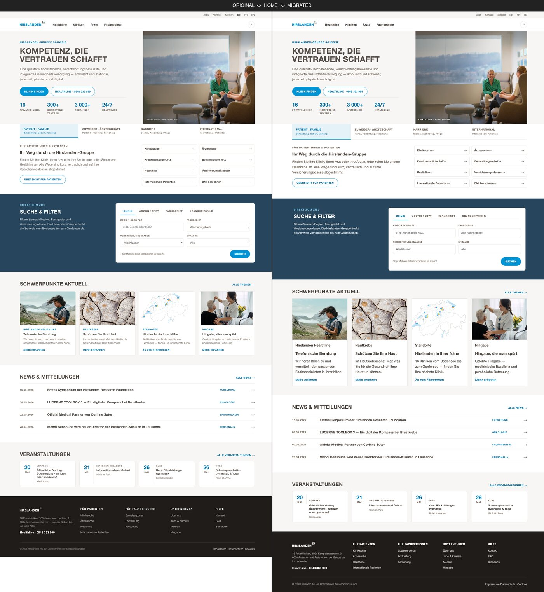
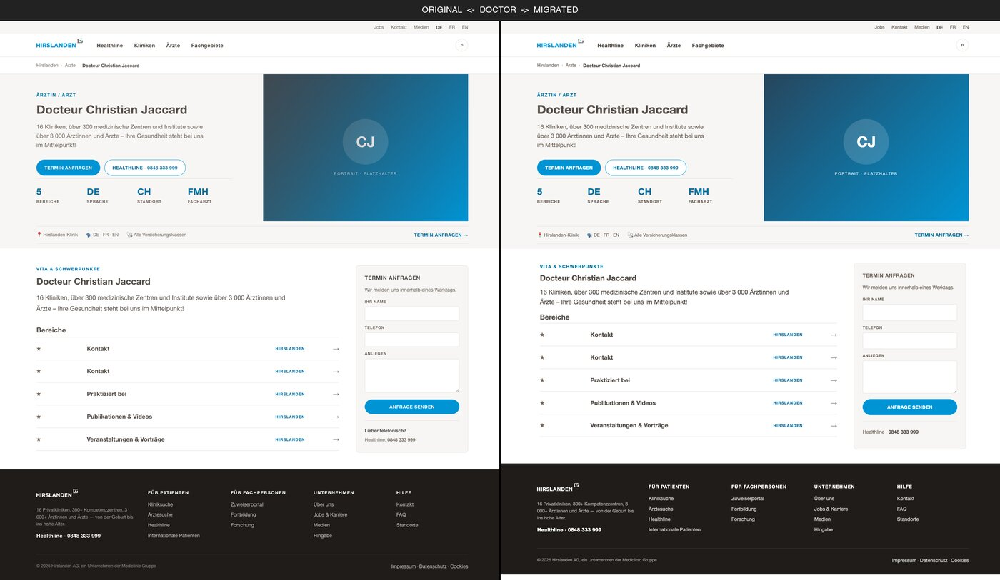
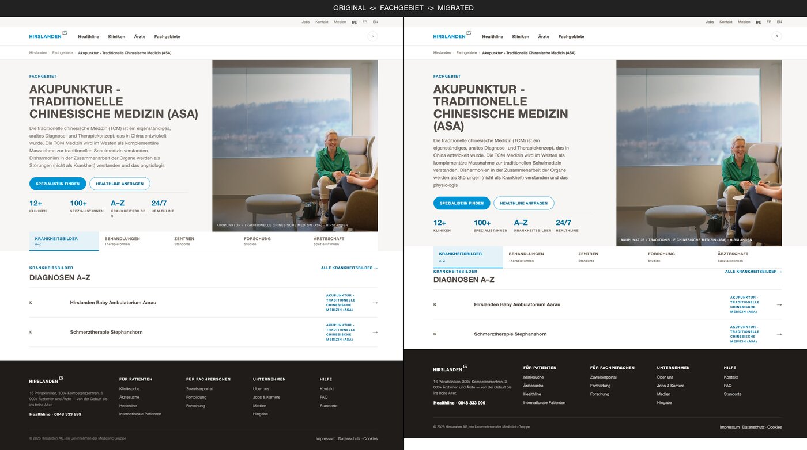
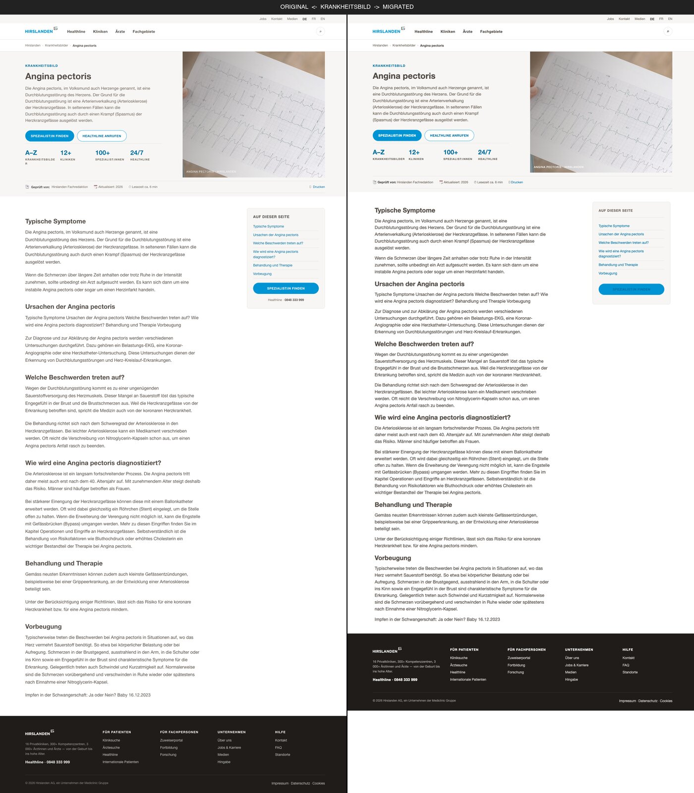
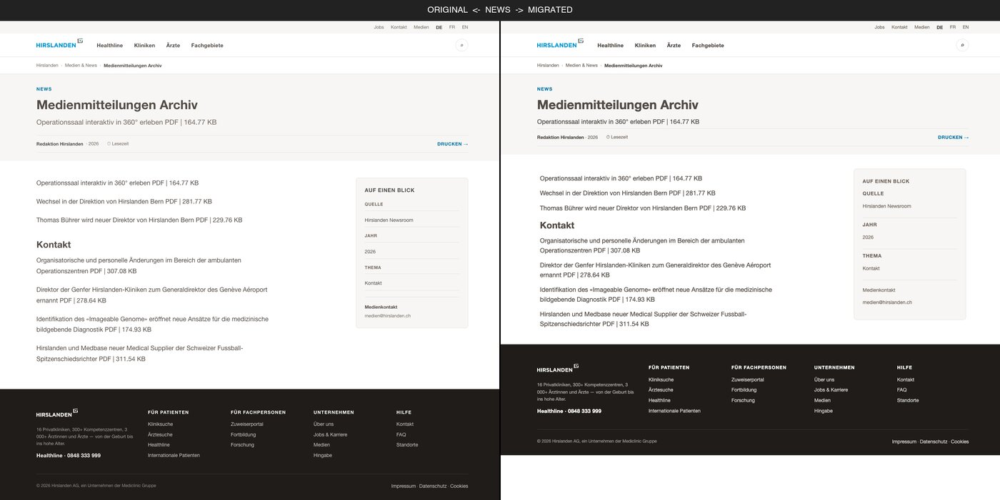
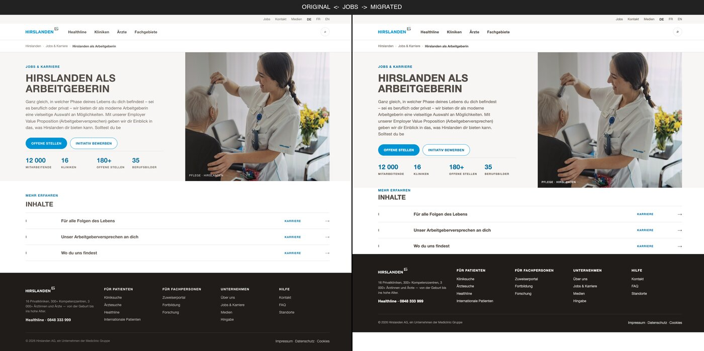

A German hospital-group's prototype site, 6 templates, 290 unique pages, hand-built in static HTML. We migrated it to Adobe Edge Delivery Services in roughly 7 hours of active work across 4 sessions, with every block, section, and chrome detail measured against the original at 1440px. The result is close — chrome pixel-aligned, blocks within ±1–8px — with a handful of small gaps still on the open-thread list.

The pitch
Phase 01's MD5 check showed 289 of 291 source pages share byte-identical CSS — a single
design system. That unlocked everything: build the block library once, validate per
template, bulk-emit the long tail. From there, the loop was tight: each pass against the
live source used getComputedStyle
on every element to surface gaps screenshots missed.
The proof
Original (left) and migrated (right) joined for every template. Click any thumbnail to open at full size. Look for chrome, hero, section bands, breadcrumb, body content, and footer — they line up closely, with a few small gaps still visible if you look hard (tab heights ~8px, the odd sub-element margin).






From the source itself · honest small print
The source is a static design prototype, not a production site. Most things that look interactive were never wired. Here's what we changed, what was never functional even in the original, and what was simply absent from source HTML.
! Changed from source
<select> with real options ("Onkologie", "Allgemein/Halbprivat/Privat", "Deutsch/Französisch/Italienisch/Englisch"); migrated to <input> with the first option as placeholder. The dropdown options are lost.onclick → addEventListenerCSP-safe rewrite of the hamburger toggle. Functionally identical.~ Looks functional, but never was
role="tab" + active styling but no JS handler. Visual-only in source too.action="/de/corporate/search.html" targets a placeholder that doesn't serve search results.<form> has no action attribute → submit would do nothing.∅ Absent from source itself
<script> tagsNo analytics, no GTM, no consent SDK, no service worker. Source is design-only.
Net interpretation: the migration faithfully reproduces the source's
visual surface. The finder select → input change
is the one place we genuinely degraded source content; everything else was already
decorative in the source. A production migration would need to add back: real
<select>
options, tab content switching, form submission backends, analytics, OG/schema metadata,
multi-language (DE/FR/EN), and parent listing pages.
The arc · 11 phases
Every phase has a journal entry written during the work. Here's the skim — full narrative at docs/journal/.
291 files, same boilerplate. 289 of 291 share byte-identical inline CSS. Six body templates. The MD5 finding rerouted everything: a template-recipe migration was clearly going to win.
Picked Approach A — template-recipe driven. Documented as ADR-0002. Rejected the per-page page-import approach (290× slower).
EDS project at catalan-adobe/hirslanden-eds-prototype, branch-workflow ADR set, 8 custom blocks built (hero, list-rows, head-row, aside-card, meta-strip, tabs, audience-tabs, finder) + extended cards.
One page per template through the migration. First serious side-by-side. Caught the things you only notice at the seams: aside-card width, two-column grid, list-rows layout.
migrate-bulk.mjs + post-bulk.mjs. POSTed to DA via the admin API (concurrency 5), triggered previews. Fixed a slug-normalization gotcha (admin.hlx.page rejects --). 290/290 posted, 290/290 previewed.
User: "close but not yet 1:1". Systematic side-by-side at 1440px caught: KPI strip position, hero image caption, article-body width, doctor form fields, events grid layout. Fixed and re-emitted.
Chrome ships as fragments/*.html + minimal block decorators. Replaced the boilerplate's 273-line header.css with the source's actual styling. ADR-0005 documents the authorability/fidelity trade.
Computed-style audit caught 4 chrome bugs. Root cause was three globals source had but prototype didn't: *{box-sizing:border-box}, body{line-height:1.55}, img{display:block}. Phase 11 promoted them once → cascading gaps fixed across every block.
Walked each of 8 blocks with getComputedStyle + offsetHeight. Found and fixed: button line-height (every button +4px), section wrapper widths (every block 96px wider), heading sizes globally, EDS auto-<p> margins in 4 separate blocks, cards date-col, meta-strip padding, finder Tipp hint.
Three section-style variants emitted by the migration: bg-surface for schwerpunkte/events, meta-band (14px) for doctor/krankheitsbild thin strip, article-hero-band (32/24) for news. Backgrounds now fill full vertical bands matching source.
JS-derived from window.location.pathname + page H1, appended inside <header>. 5-entry path-to-label map covers all template families. Home returns null (matches source).
What made it work · 6 patterns
Repeatable patterns — the kind worth carrying into the next migration.
MD5-identical CSS across 289 pages meant build-once, bulk-emit. Without that finding from Phase 01, this would have been a 290× workflow.
getComputedStyle beats screenshotsScreenshots stop at "looks close". Computed-style measurement surfaces the ±2–8px discrepancies screenshots miss. We caught 16+ sub-pixel bugs that way; the remaining gaps are documented, not hidden.
box-sizing, line-height, img display — every block ported from source assumed them. Once promoted to styles.css, cascading gaps disappeared everywhere at once.
<p> is a recurring trapEDS wraps cell text in <p> tags. Default p margins inflate any flex-layout block by ~14px per cell. Hit in 4 separate blocks. Fix shape: .block p { margin: 0 }.
Header, footer, breadcrumb all use the same shape: a static or computed HTML fragment fetched (or built) by a minimal block decorator. Worked for all three. ADR-0005.
Source uses padding: 48px 0 on sections so backgrounds fill the full vertical band. The boilerplate's default margin: 40px 0 left bg only covering content. Once switched, the alternating-band rhythm became visible.
How fast — for real?
The wall-clock window was 21 hours (Thu 21 May 14:21 → Fri 22 May 11:24), but most of that was overnight or breaks. Reconstructing from git commit timestamps (any gap longer than 60 minutes counted as a break) gives us ~6h 45min of active work across 4 sessions — producing 79 commits across 2 repos and 11 phases of documented work. The bars below are Gantt-style: each session is positioned where it falls on the cumulative active-time line, so you can read the continuity at a glance.
Bar width is proportional to estimated active time. Bulk emission itself (290 pages POSTed + previewed) is ~3 minutes wall-clock — the bulk of "Phase 08" was building the migration script, not running it.
The fast part is the loop, not the keystrokes. Of the ~7 hours active, something like 60% was iterative measurement → fix → re-measure cycles. The migration script + bulk runner combined are ~750 lines of code, written in roughly 90 minutes. The remaining time was the discipline of holding every block to the same 1:1 bar.
The collaboration model
The human held the strict 1:1 bar (no "near-fidelity" accepted), picked the major architectural moves, set the branch-workflow rule, and reviewed each phase before approving the next. The AI ran the per-element measurements, wrote the migration scripts, ported and scoped CSS, did the iterative gap-table loops, and kept the documentation in sync with the work.
Every phase has a journal entry written during the phase, not after. That's the real audit trail.
Tools & skills used
No build step on the EDS side. No custom infrastructure. Just the EDS ecosystem +
Node migration scripts + a headless browser for measurement + ImageMagick for the review
artifacts. The skills column lists what the agent consulted from the
.agents/skills/
catalogue.
A Adobe / EDS ecosystem
da.live/#/catalan-adobe/hirslanden-eds-prototype<branch>--<repo>--<owner>.aem.pagecards)B Skills consulted
~/.aem/da-token.json)C Code + tooling
--)getComputedStyle audits + full-page screenshotsaudit/side-by-side/compose.sh)
What we deliberately didn't use: no build step, no bundler, no
preprocessor, no CSS framework, no React/Vue, no Storybook, no design-tools handoff (the
design tokens were already in the source's inline <style>),
no theme system, no overlay engine, no `install-substrate.mjs`. The constraint was
stay as close
to plain EDS as possible so the result is portable and the methodology is
reproducible.
Explore
Skim → deep, in the suggested order.